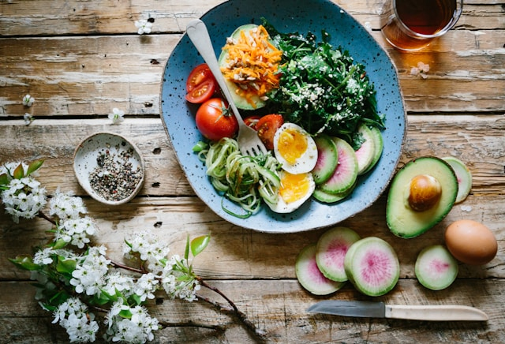
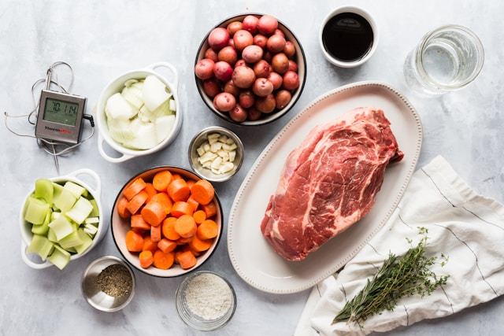

Escaneo de ingredientes
Con tu código QR puedes acceder a la información de la etiqueta y ver si existe algún riesgo.
Comemos Seguros es un sistema de control de alérgenos y gestión de menús, diseñado para su uso en centros educativos, sanitarios y otros entornos colectivos donde se preparan y distribuyen comidas de forma regular. La aplicación tiene como objetivo principal facilitar la planificación, supervisión y control de los menús, asegurando que se respeten las restricciones alimentarias y se reduzcan al máximo los riesgos asociados a la presencia de alérgenos.

Diseñado para profesionales que necesitan gestionar intolerancias y alérgenos de forma precisa en entornos laborales tan sensibles como los colegios, los hospitales o los cuarteles. Te ofrecemos:
Con tu código QR puedes acceder a la información de la etiqueta y ver si existe algún riesgo.

La aplicación es apta para viajar al extranjero y para ser usada en varios idiomas.

Perfiles de usuario personalizados para una mejor organización y control de lo que consumimos.
Comemos seguros está pensado para poder usarse en colegios y hospitales. Esta razón es la que nos obliga a presentar un producto de calidad con todos las garantías de seguridad.
Nuestra App también está recomendada para deportistas y gente que desee llevar unos hábitos de vida saludables. Controla los alimentos que comes mientras te cuidas.

Disponemos de una base de datos en constante ampliación y con todos los productos que encontramos y que nos envían nuestros clientes.
Comemos Seguros avisa al usuario cuando se detecte la presencia de un alérgeno incompatible en un producto o receta, contribuyendo a la prevención de errores.